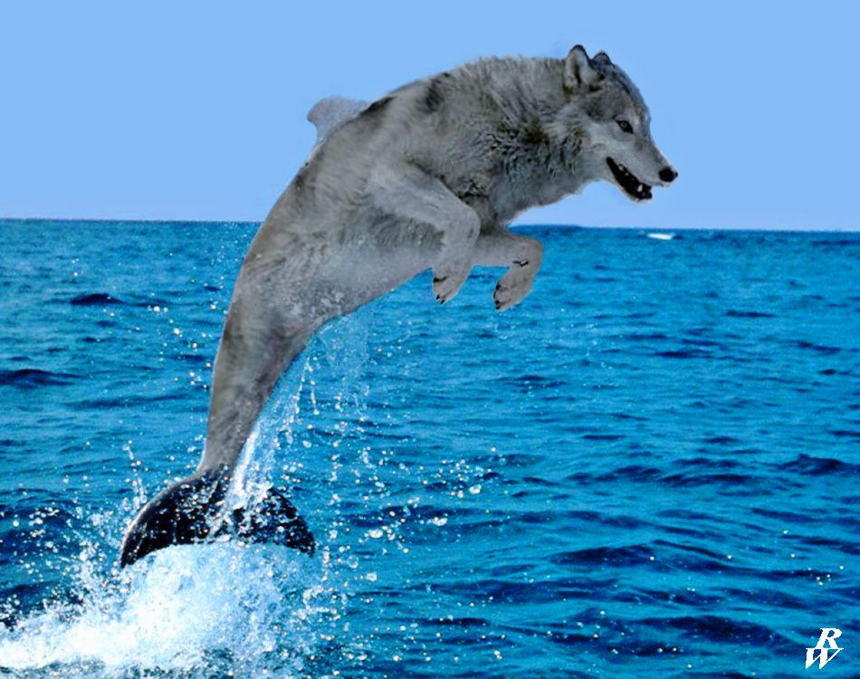

ABOUT ME
my name Kateryna, born and raised in Odessa, Ukraine. i like crocheting, documentaries "how to make a cult"-kind, and hate cooking. want fint job in QA field to be able work remotely and learn smth new
work experience/certificates
- trainee at HillelIT 09.2023-02.2024
skills
- basic knowledge of Jira
- full life-cycle of bugs
- most common and usable types of testing
- creating of check-lists, test plans and test summary
- Git
- most common SDLC types (Agile, Scrum, etc.)